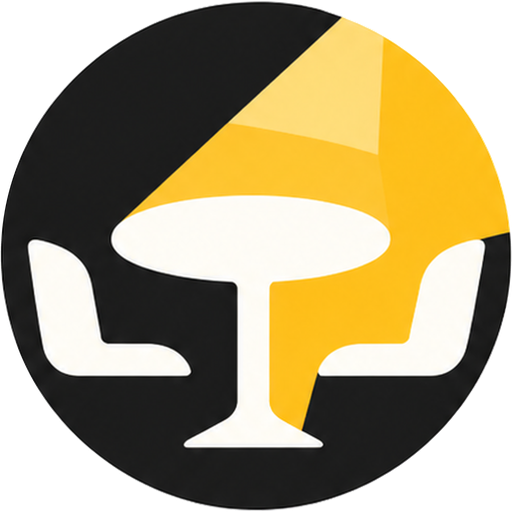

Яндекс
Спейс
Сейчас
Яндекс Спейс · учебный прототип · данные демонстрационные
Яндекс
Спейс
Свободные столики в кафе — в реальном времени
Что хотите сделать?
Казань, центр ·
заведений передают статус мест прямо сейчас